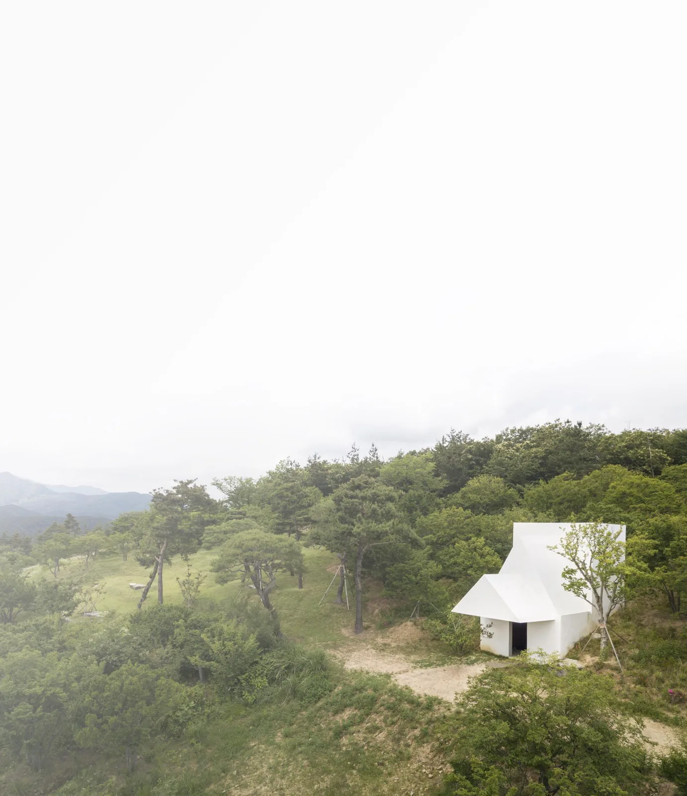
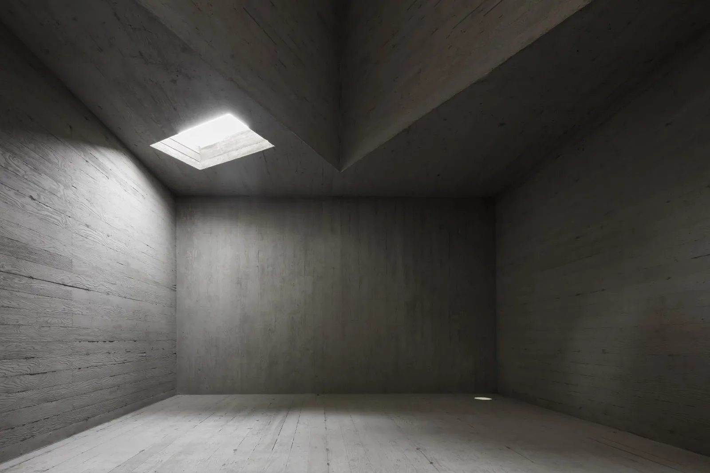
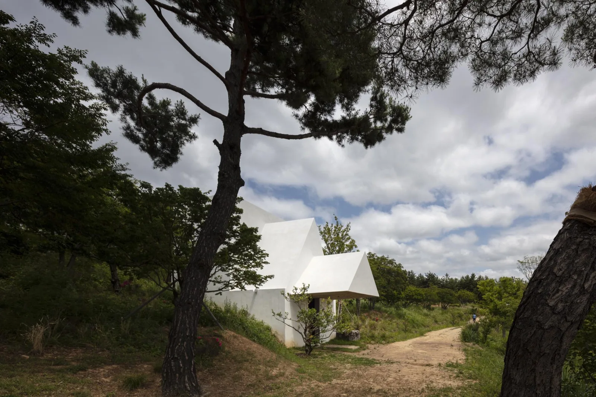
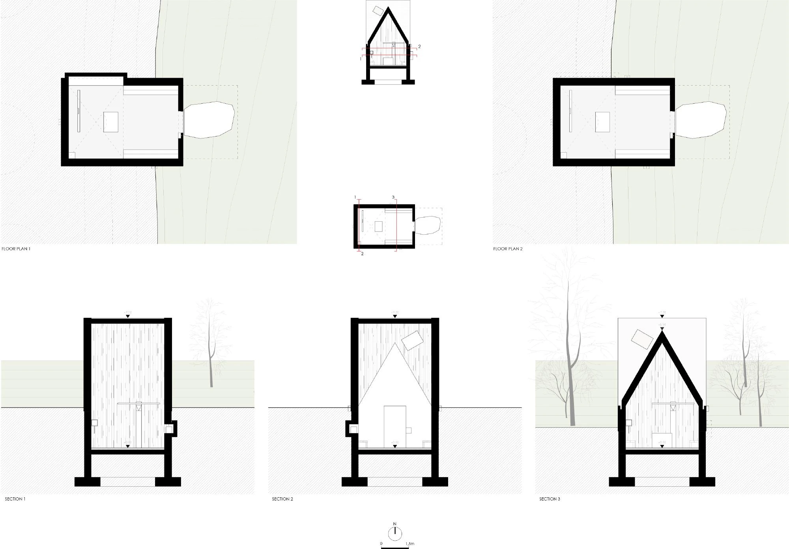
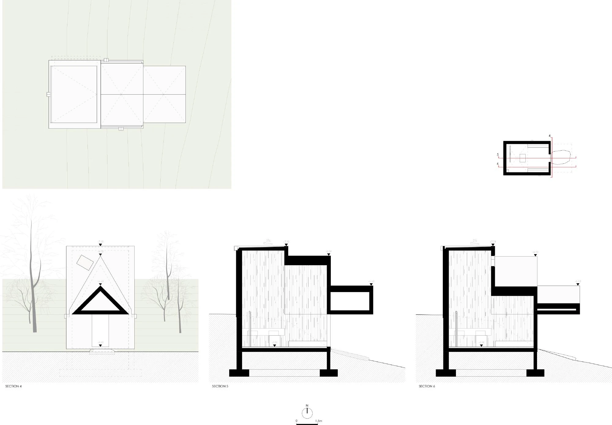
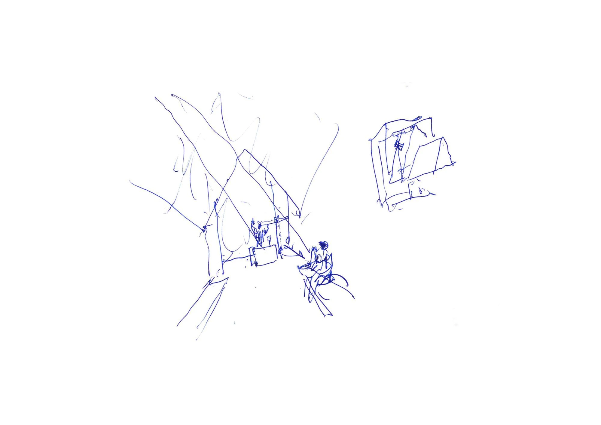
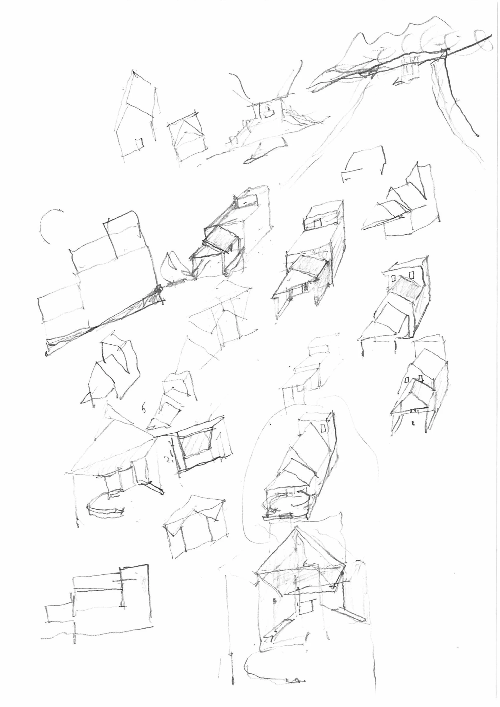

Chapel · 2018
Chapel in Saya Park
Álvaro Siza Vieira and Carlos Castanheira
Gyeongsangbuk-do, South Korea
Intended for Christian worship, the chapel adds an inward place for meditation to a park of outdoor artworks and symbolic spaces. Its single interior supports a concentrated encounter with space and light.
The building nestles against the hill and opens towards the east. Castanheira describes the intention as creating an interior counterpart to the park's outdoor beauty: a small upper aperture produces a much larger impression of light within the simple concrete volume.


Relevant connections
THINK
A compact setting for worship, meditation and inward reflection.
Images and drawings / 07











